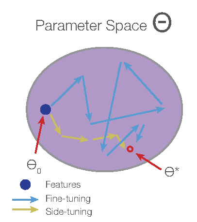
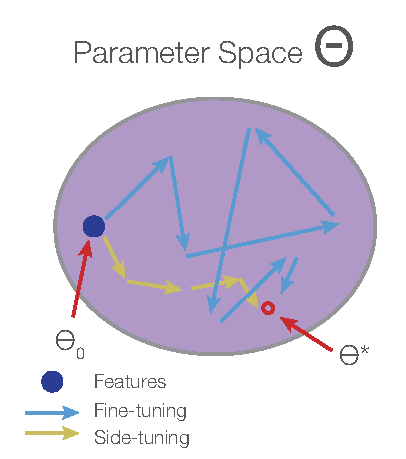
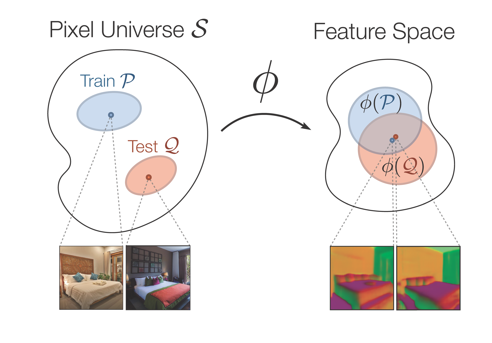
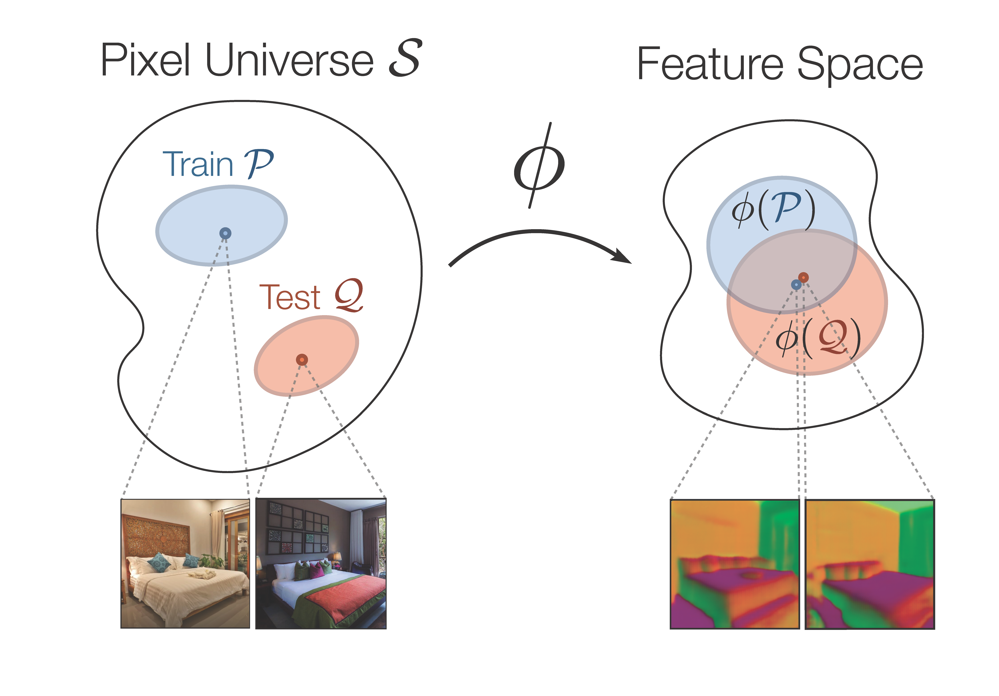

Jeffrey O. Zhang, Alexander Sax, Amir Zamir, Leonidas Guibas, Jitendra Malik
In ECCV 2020 (Spotlight) [Paper] [Website]
 

Alexander Sax, Jeffrey O. Zhang, Bradley Emi, Amir Zamir, Silvio Savarese, Leonidas Guibas, Jitendra Malik
In CoRL 2019 [Paper] [Website]
Jeffrey O. Zhang*, Alexander Sax*, Bradley Emi, Amir Zamir, Silvio Savarese, Leonidas Guibas, Jitendra Malik
Winner of CVPR 2019 Habitat Challenge [Paper] [Poster]
Dennis Lee*, Haoran Tang*, Jeffrey O. Zhang , Huazhe Xu, Trevor Darrell, Pieter Abbeel
In AIIDE 2018 [Paper] [Website]